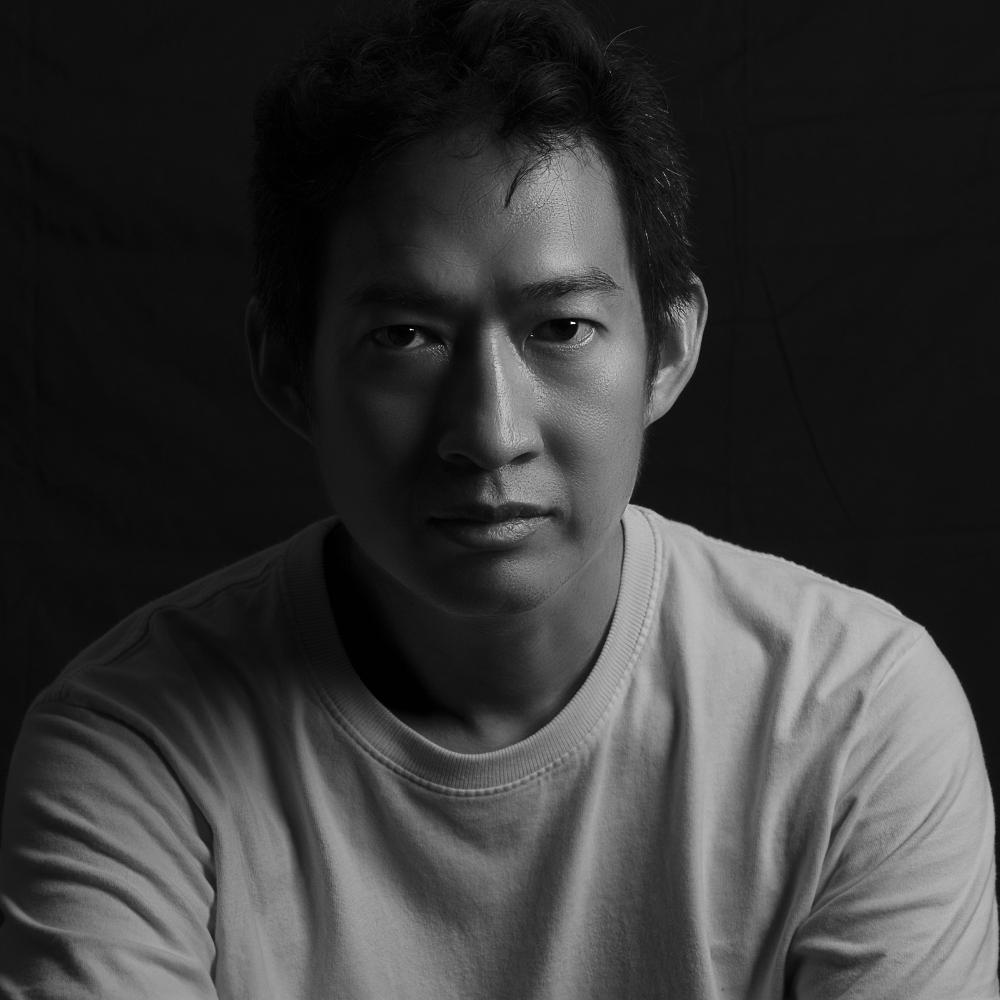

ดนย บุญทัศนกุล

His work weaves the feeling of music into images, merging with landscape and the things around him — dissolving into ink lines that form a painting language entirely his own.
Danaya Buntasnakul is a Bangkok-based artist whose practice moves between watercolour, ink, and the written word. He holds an M.F.A. in Painting from Chiang Mai University and studied at L'Accademia di Belle Arti di Firenze, Italy.
Across fifteen years and six solo exhibitions, his work has explored intimacy, dreaming, and the quiet thresholds of being human — every parallel practice nourishing a painting language shaped by ritual, attention, and listening.
งานของเขาถักทอความรู้สึกจากเสียงเพลงสร้างเป็นภาพ ผสานกับภูมิทัศน์และสิ่งต่าง ๆ รอบตัว ละลายไปในเส้นหมึก เกิดเป็นภาษาจิตรกรรมที่เฉพาะตัวอย่างยิ่ง
ดนย บุญทัศนกุล ศิลปินจากกรุงเทพฯ ทำงานบนเส้นทางที่สีน้ำ หมึก และตัวอักษรพาดผ่านกัน จบปริญญาโทจากคณะวิจิตรศิลป์ มหาวิทยาลัยเชียงใหม่ และเคยศึกษาต่อที่ L'Accademia di Belle Arti di Firenze ประเทศอิตาลี
ตลอด 15 ปีกับนิทรรศการเดี่ยว 6 ครั้ง งานของเขาสำรวจความใกล้ชิด ความฝัน และรอยต่อเงียบงันของความเป็นมนุษย์ — ทุกสิ่งที่เขาทำต่างหล่อเลี้ยงภาษาในงานวาด
attention · listening · the slow search for meaning
การสังเกต · การฟัง · การค้นหาความหมายอย่างแช่มช้า